If you want to see tutorial in a separate web browswer window click here.
Errors
There are three kind of errors:
- Compile errors. This is where the game does not compile so it cannot be run. Often this is just a simple spelling mistake.
- Runtime errors. These are errors that appear when playing the game. These can be a bit trickier to track down.
- Logical errors. These never break, crash or cause any warnings in the game. They are just plain mistakes or wrong. Often we refer to these as bugs.
Lets create a new room by  right-clicking on Room in the Resources tab and selecting Create Room. Call it rm_errors.
right-clicking on Room in the Resources tab and selecting Create Room. Call it rm_errors.

 Right click on Object title in the Resources folder. Create a new game object called obj_errors_controller.
Right click on Object title in the Resources folder. Create a new game object called obj_errors_controller.
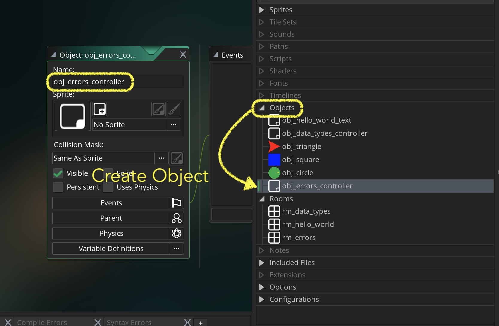
Now we want to actually use this room so we need to drag rm_errors to the top of the room list in the Resources menu.
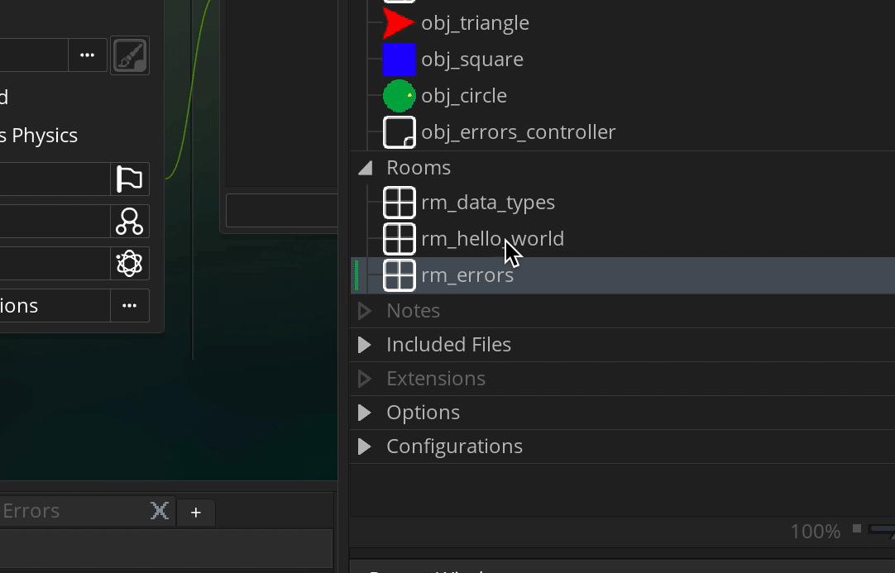
Lets start with heads up display (HUD) for this room. Press the  Add Event button and select a Draw | Draw event:
Add Event button and select a Draw | Draw event:
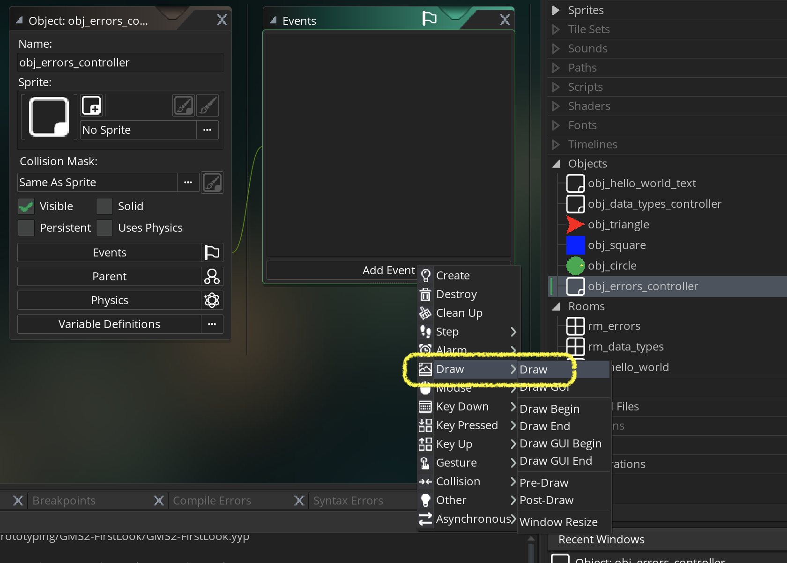
Type the following script in the newly created draw script. Please mispell draw_text to show what happens if you mispell a function name.
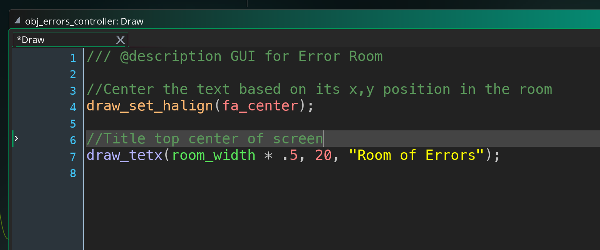
Now we need the room to run the script.  Double left click on rm_errors to open the room and drag and drop the obj_errors_controller object into the room.
Double left click on rm_errors to open the room and drag and drop the obj_errors_controller object into the room.
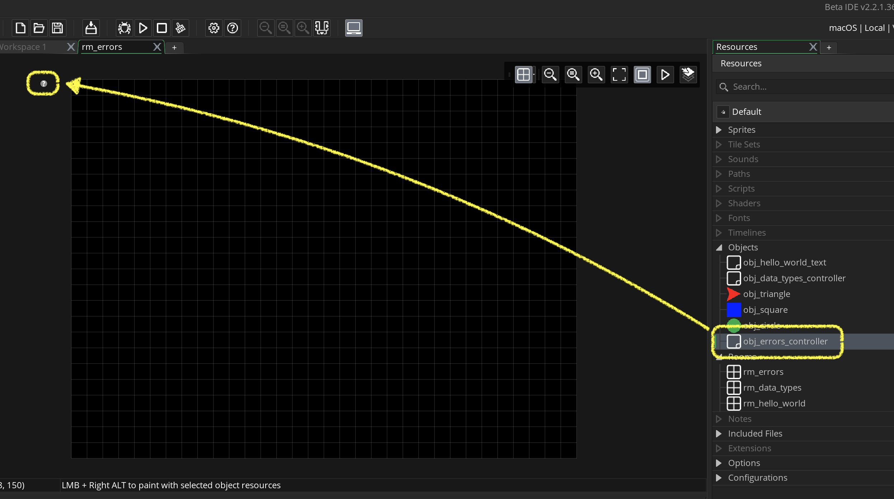
Run the game again by pressing the  Play Button. This time the game never runs. At the very bottom there should be a tab whose title is Compile Errors. Inside it reads the message Object:obj_errors_controller Event:Draw at line 7: unknown function or script draw_tetx. Sometimes the errors can be a bit obtuse other times there are very precise. Now we know which object, which event type and what line our error is in.
Play Button. This time the game never runs. At the very bottom there should be a tab whose title is Compile Errors. Inside it reads the message Object:obj_errors_controller Event:Draw at line 7: unknown function or script draw_tetx. Sometimes the errors can be a bit obtuse other times there are very precise. Now we know which object, which event type and what line our error is in.
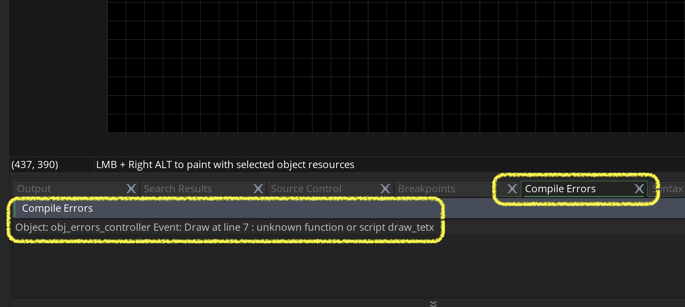
OK, lets fix the spelling mistake. Please notice the color change in the editor. If you are using a gamemaker function or variable it will be an orange color and this is one tip that something is wrong. This only works for GML supplied names, as the ones we create ourselves will never be orange.
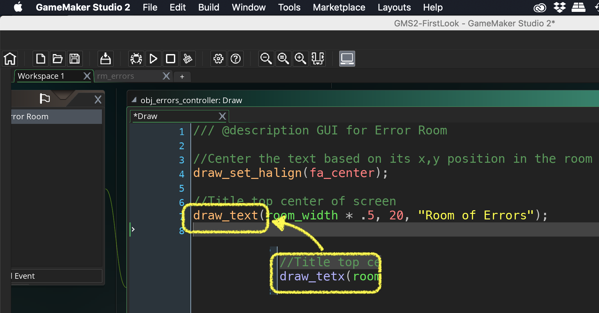
Run the game again by pressing the  Play Button. Now it loads the game up again. This was the first type of error we will get in gamemaker a compile error. It means the compiler stops us from running the game as it has a problem trying to build the game executable.
Play Button. Now it loads the game up again. This was the first type of error we will get in gamemaker a compile error. It means the compiler stops us from running the game as it has a problem trying to build the game executable.
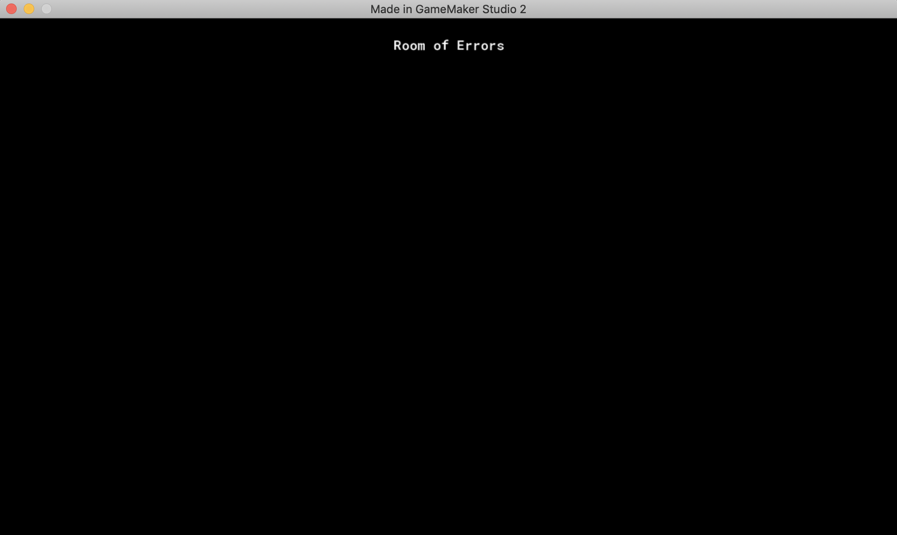
Now lets look at some more errors. Lets make the font a bit larger. Right click on the Font title in the Resources menu. Select Create Font from the menu and name the new font fnt_title Change the Style to Bold and the Size to 24. This will be twice the size as the previous version.
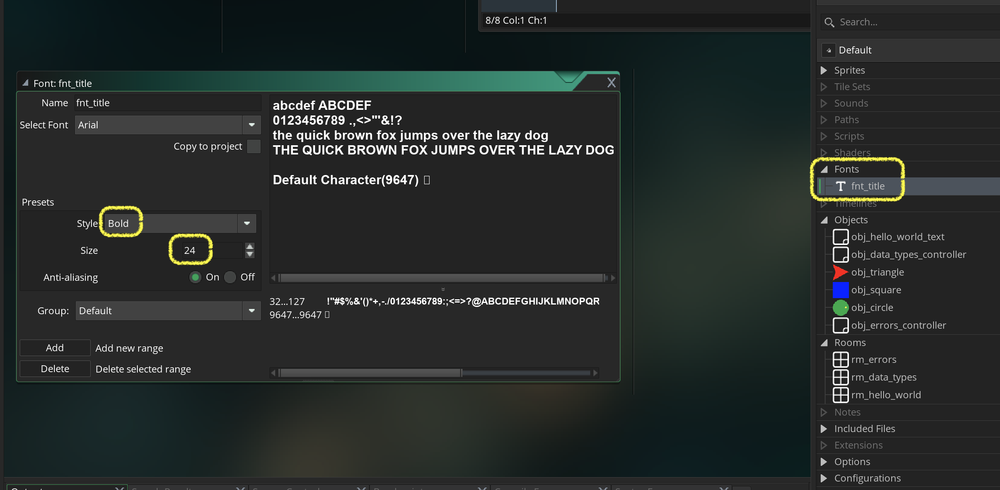
Now reopen the obj_errors_controller:Draw event script and change the font before the draw text with a new function called draw_set_font(font).
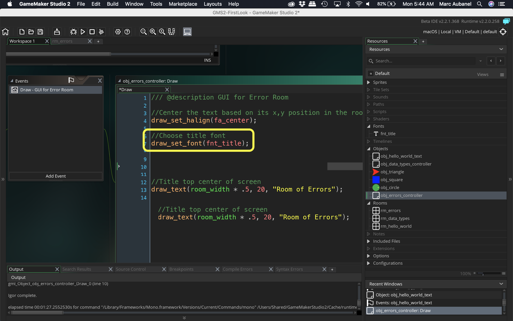
Now mispell the font name in the parenthesis. Look at what happens to the color of it? Not only does GameMaker color its own variables and functions it also colors red resource names that it recognizes that you added to the resource list. In this case if we don't spell it, it will look for a variable holding a font. OK, change the spelling back to fnt_title and fix the spelling error.

Run the game again by pressing the  Play Button. The title is now a lot larger. Now lets change the color of the font.
Play Button. The title is now a lot larger. Now lets change the color of the font.
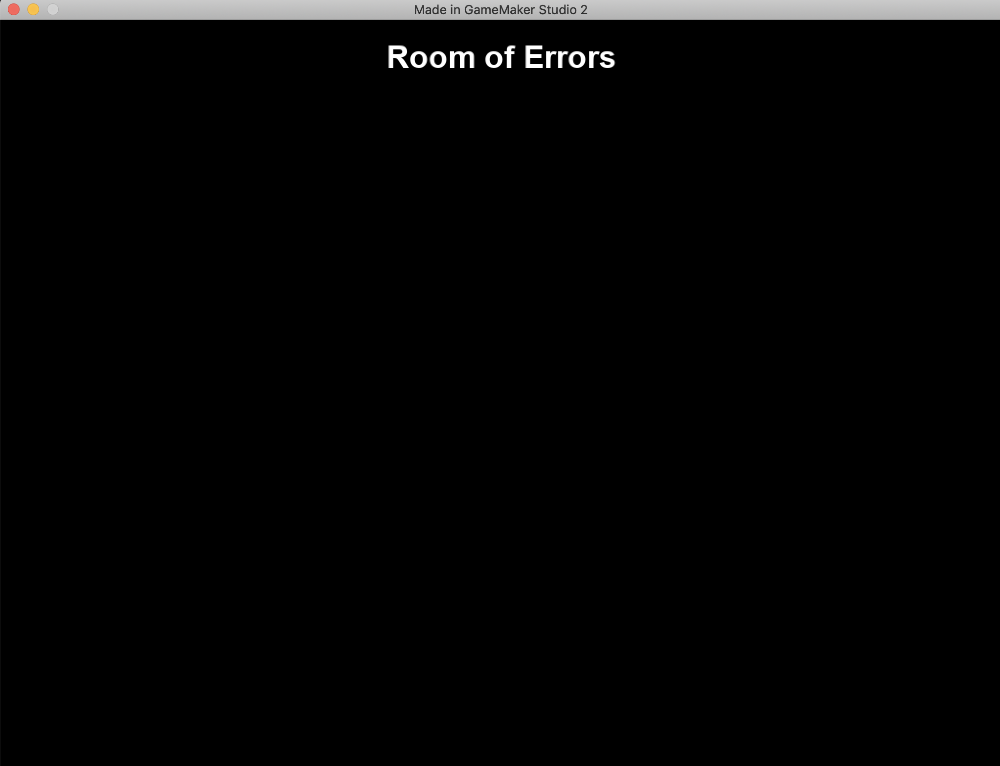
Now lets add the function draw_set_color(color). This affects all colors after the line that you will be drawing (font or not). Now make sure you mistype this on purpose with two (( opening parenthesis and a mispelled color name (should be c_green and not just green).
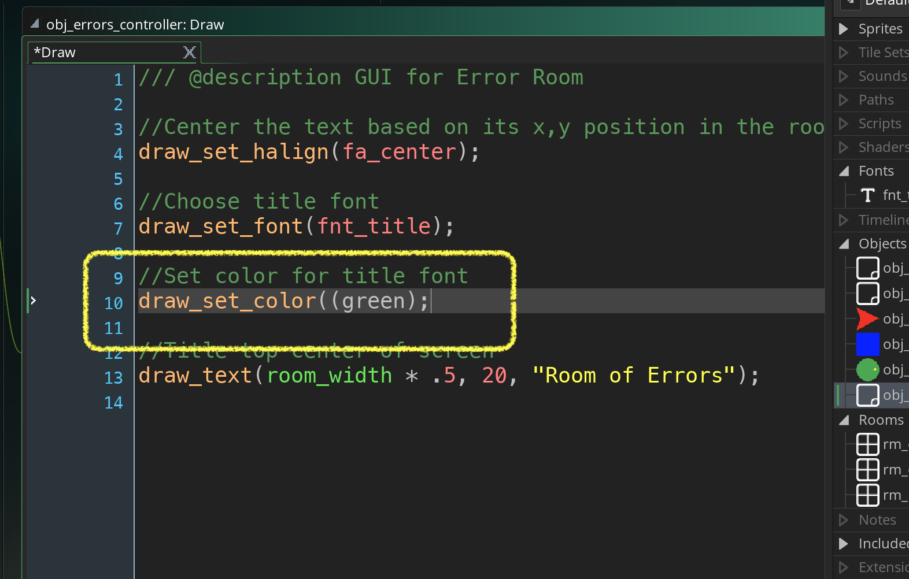
For an error that trips up the parser (it reads text and looks for issues like more opening parenthesis than closing ones) it will have a red highlight. Now the issue with compiler issues is that the problem is not always on the line indicated. In this case the first red box is correct but the second red box has no errors. Often the error is not where the IDE thinks it is and you have to be careful.
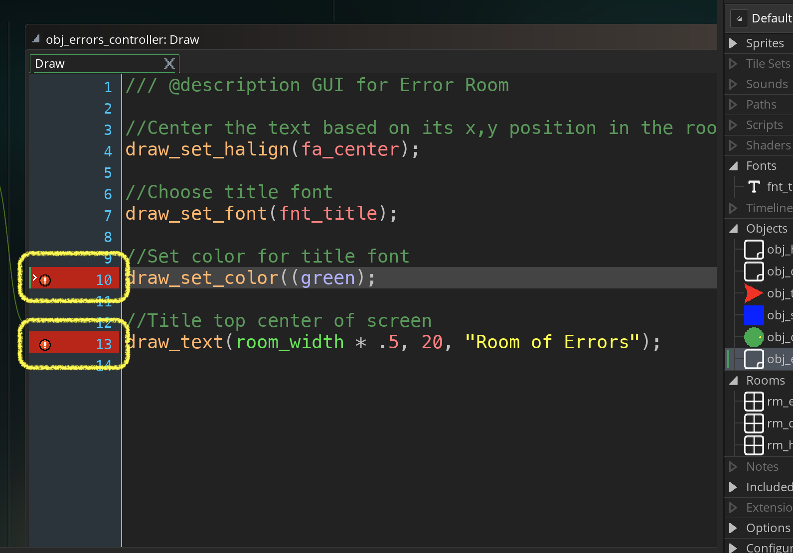
Before fixing any errors run the game again by pressing the  Play Button. Take a look at the error. Again, it gives you a hint to the first problem. Notice that it says nothing about our second error at this point. This is still a compile time error.
Play Button. Take a look at the error. Again, it gives you a hint to the first problem. Notice that it says nothing about our second error at this point. This is still a compile time error.
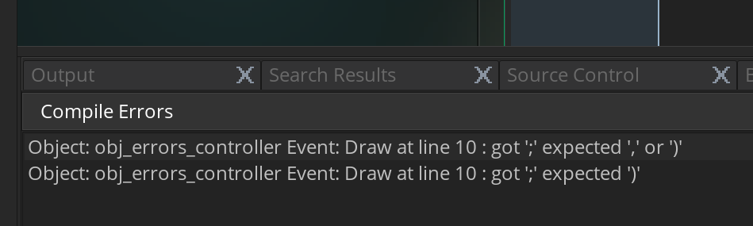
Fix the first error in the script by deleting the extra opening parenthesis. Then run the game again by pressing the  Play Button. This time it does run so it did compile and build the game. But uh oh, it creates a run time error:
Play Button. This time it does run so it did compile and build the game. But uh oh, it creates a run time error:
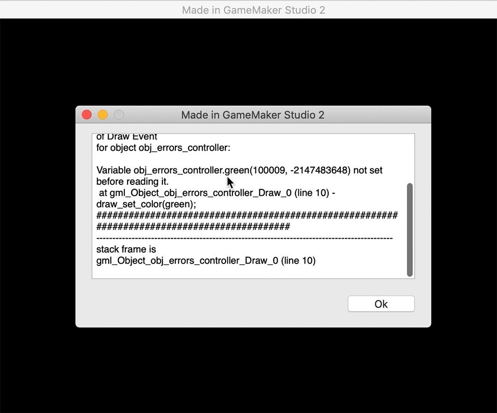
Run time errors are a little bit harder to fix and understand the error message. The reason it compiled and run is it thought you had created a variable called green that you were calling. In fact if you added the line
green = c_green
It would have ran fine (although you needlessly created another variable for the color green). The hint in the error message it says green... not set before reading it. This is a very common error that occurs when we forget to give a variable a default initial value or mispell the name. Fix the error and run the game with the green font shown.
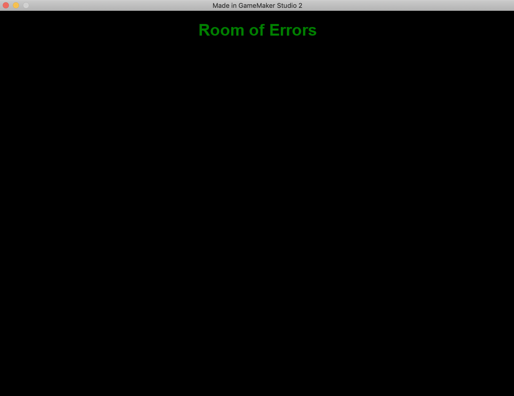
The next step is to import a scipt into the script folder. This script will be full of errors that you can fix. You will find it in the Included Files | TutorialResources folder. It is in a folder called scr_resources. If you have any problems finding this file you can also find it here. Look at the finder or explorer and find out the location of this folder on your computer.
Now  right-click on the Scripts header in the Resources folder. select Add Existing and go to the above folder. Select the file called scr_errors.yy. Then double click on this file and you should see a script file with errors in it.
right-click on the Scripts header in the Resources folder. select Add Existing and go to the above folder. Select the file called scr_errors.yy. Then double click on this file and you should see a script file with errors in it.

There are a few functions introduced. Lets look at the first function: instance_create_layer(x, y, layer_id, obj). This function spawns a game object dynamically in code rather than placing one in the room. This would be used for objects like bullets that the game spawns when the player presses the fire button. This is a way to add an object to a room without placing it there to run when the game starts.
But what does it return? The function returns a
Real (instance ID Value)
Every object in a room will get a real number so we can access it later on. If we look at our last room we can see that each object in the room will have an instance number:
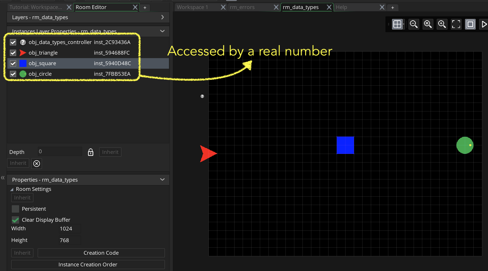
So in this case we want to spawn a new object then position somewhere different than where it's Craate event sets. Lets say we want to use this script to spawn an obj_circle object. But how do we access the x & y variable from within another object. This script is being called somewhere else but we can still access them by going through the reference. We want to dot instance access another instances variables.
What does this mean? We can take: foo = isntance_create_layer(0, 0, "Instances", obj_circle);
Now the foo variable holds the reference to the newly created circle. So we can access foo's variables by putting foo. in front of the variable name. So if we want to position it's x value we would input foo.x = room_width * .5;.
We can see this in the newly imported script:
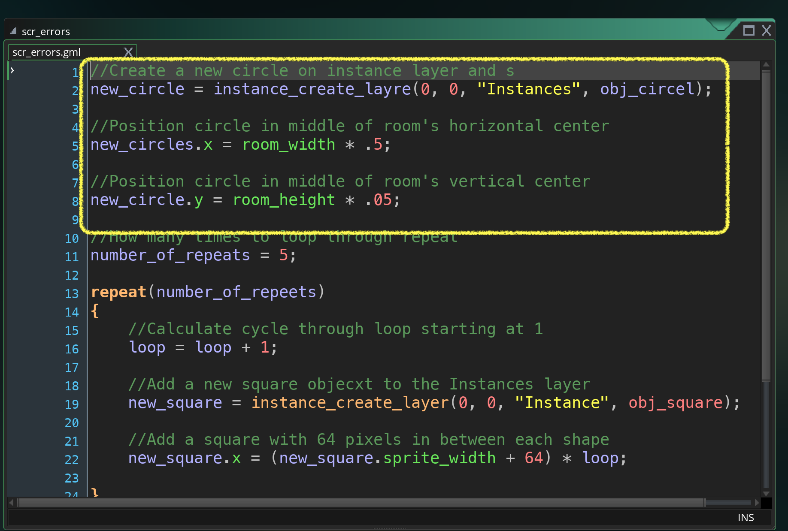
The other item I want to highlight is the instance_create_layer(x, y, layer_id, obj) layer_id argument we need to pass to the function. It is the third variable we send when calling this function:
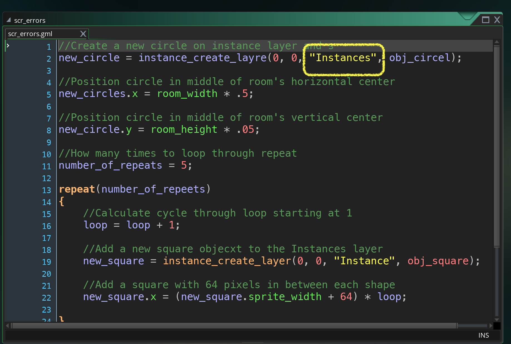
What this refers to is the layer in the room that it will be added to. Just like Photoshop, you can add layers to this yourself. But the default layer for game objects in the rooms is always called "Instances". Secondly why don't we pass it Instances without quotation marks. This is because it is a variable that is NOT an enumerator. The user can create their own names, so the engine doesn't know all possible names to assign as enumerators. We need to pass the name of the layer as a string which is done with quotation marks:
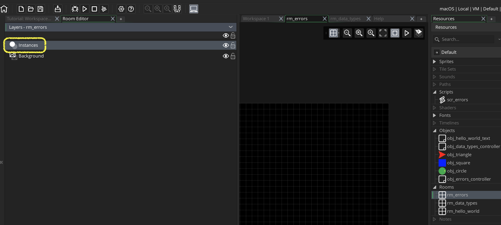
We need to call this script so it runs. Double click obj_errors_controller and add call this new function:
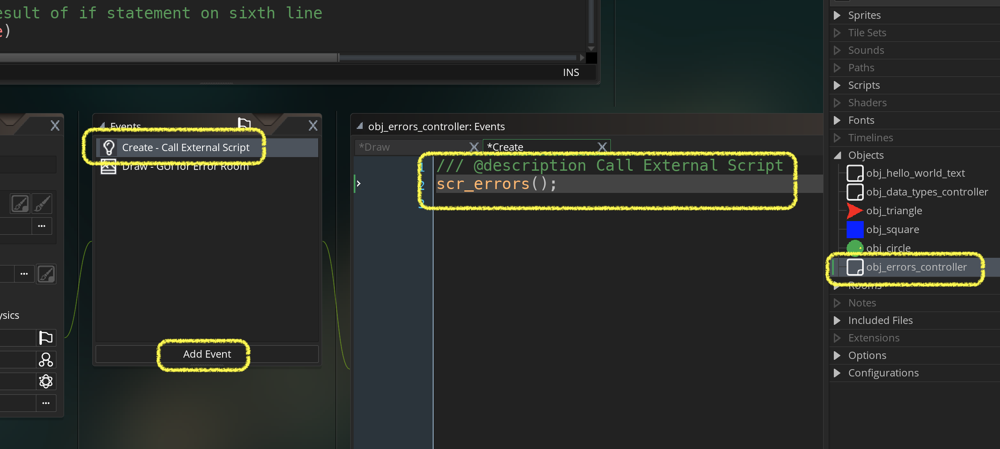
Now you can try and run the game but this script is full of errors. Fix all the errors on your own and you should end with the following end result:
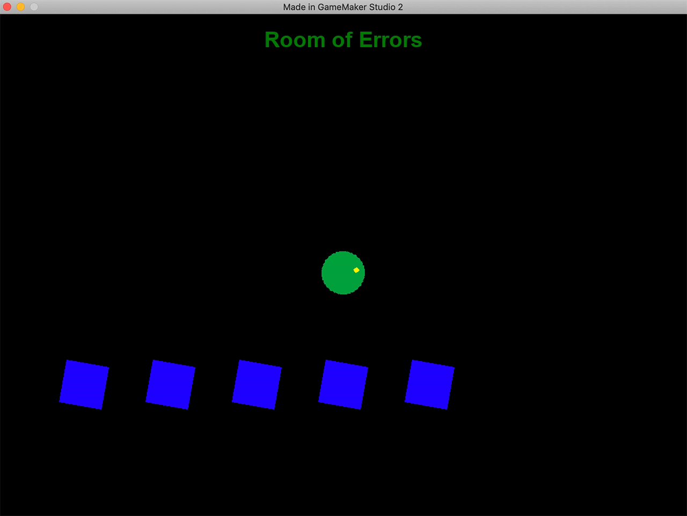